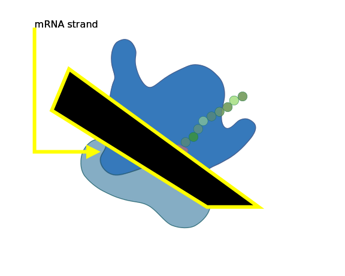
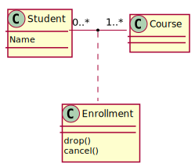
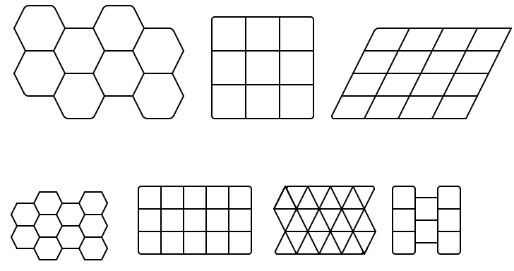

⚠️NOTE️️️⚠️
This is a custom note.

Use the following to generate a table of contents...
```{toc} ```
Output:
Set the title of the output document using the title inline/block tag:
```{title}
Markdown Example!
```
Output: (see the title of this HTML page)
If you're using a block tag, make sure you put the title on a NEW line (not on the same line that declares the tag).
Bookmarks allow you to automatically create links in your markdown document using regex. That is, if a piece of text matches some regex pattern, it'll automatically link back to the point where that regex was declared.
If all you care about is quickly bookmarking a piece of text, the simplest usage of this tag is `{bm} <LABEL>`. For example, `{bm} coke zero`: coke zero will be the reference for coke zero, cOkE zErO, and coke zeros (it's case-insensitive).
If you care about more elaborate use-cases, the details below provide advance usage instructions.
To create a bookmark, use the bm tag: `{bm} <LABEL>/<REGEX>/<REGEX_FLAGS>/<SHOW_PRE>/<SHOW_POST>`. This tag takes in 5 arguments...
<LABEL>: Text to output where the bookmark is declared.
That is, the place where you define this tag is the place that this label gets output (in bold).
<REGEX>: Regex used to match text in the document (requires exactly 1 capture group).
When text is matched, the text that gets captured by capture group 1 is the text that gets output and linkified. The portion matched before/after capture group 1 will be used for matching but won't be linkified, and depending on SHOW_PRE/SHOW_POST may or may not be output.
<REGEX_FLAGS>: Regex flags to use for <REGEX>.
Currently only the i flag is supported (i = ignore case).
<SHOW_PRE>: true/false indicating if text before <REGEX>'s capture group 1 should be output.
<SHOW_POST>: true/false indicating if text after <REGEX>'s capture group 1 should be output.
There are 2 short-hand forms for bookmarks:
`{bm} <LABEL>` ⟶ `{bm} <LABEL>/(<LABEL>)/i/false/false`
This form is good for quickly bookmarking a piece of a text. It's intended for the most common cases: where you don't care about case sensitivity and you're just doing basic text search (no fancy regex constructs). It's using <LABEL> as both the label and the regex, where in the regex it's being wrapped in parenthesis such that the entire thing is capture group 1. It also defaults <SHOW_PRE> and <SHOW_POST> to false.
`{bm} <LABEL>/<REGEX>/<REGEX_FLAGS>` ⟶ `{bm} <LABEL>/<REGEX>/<REGEX_FLAGS>/false/false`
This form essentially just defaults <SHOW_PRE> and <SHOW_POST> to false.
Example usage / output:
`{bm} <LABEL>`
`{bm} <LABEL>/<REGEX>/<REGEX_FLAGS>`
`{bm} this text/\b(dog)s?\b/i`: this text will be the reference for DOG and dog but not doggy, doggo, or ddog.`{bm} this text/(carp\w+s?)/`: this text will be the reference for carps, carpenter, and carpenters, but not carp.`{bm} this text/hello\s+(world)/i`: this text will be the reference for world. Even though the word hello was specified and matched on, it won't be included in the output because it isn't captured by <REGEX>'s capture group 1.`{bm} <LABEL>/<REGEX>/<REGEX_FLAGS>/<SHOW_PRE>/<SHOW_POST>`
`{bm} grams/\d+(grams|gram|g)\b/i/true/false`: grams will be the reference for a g, gram, or grams anytime it's following numbers: 12345g.⚠️NOTE️️️⚠️
Forward-slashes (/) are used to delimit arguments. If required, use back-slash to escape the delimiter (e.g. \/).
The sections below provide details on nuances of bookmarking (e.g. tie-breaking) as well as ancillary tags that help with bookmarking in large documents.
In certain cases, multiple bookmarks may match a certain piece of text. To resolve this, the bookmark with the longest piece of text captured by capture group 1 is the one chosen. For example, if the bookmarks `{bm} label1/Samsung (Galaxy)/i/true/true` and `{bm} label2/Samsung (Galaxy Smartphone)/i/true/true` matched on the text Galaxy Smartphone Holder, the second bookmark would get chosen because capture group 1 returns a longer piece of text:
The text Galaxy Smartphone Holder should link to label2 instead of label1.
If the length between capture group 1s is the same, the longest piece of text overall is the one that's chosen. For example, if the bookmarks `{bm} label3/Google (Pixel)/i/true/true` and `{bm} label4/Google (Pixel) 4a/i/true/true` matched on the text Google Pixel 4a Holder, the second bookmark would get chosen because both capture group 1s have the same length but the overall captured text from the second bookmark is larger:
If the length of the overall text between the matches is the same, an error is thrown and you'll need to find a way to disambiguate. The typical way to disambiguate is to have the regex check for a suffix that doesn't get output when rendered.
Example usage / output:
* `{bm} base/(base)_pH/i`
* `{bm} base/(base)_DNA/i`
The word base_pH should link to the first bullet, while base_DNA should link to the second bullet.
The word base should link to the first bullet, while base should link to the second bullet.
⚠️NOTE️️️⚠️
See bm-error for related disambiguation details.
Using the bm-skip tag, you can render any text without bookmark handling. That is, if the text matches a bm / bm-error / bm-ignore tag, it won't matter.
Why is this useful? The bm-skip tag is typically used when some word matches a bookmark but that word is being used in a different context. For example, if I bookmarked Apple as a reference to the company that makes iPhones, I wouldn't want it to link text that was referring to apple as a fruit.
Example usage / output:
A mechanical `{bm} crane` is very big.
* The crane is lifting a truck (should be linked back)
* The `{bm-skip} crane` is flying away (should NOT be linked back -- referring to bird).
A mechanical crane is very big.
Using the bm-ignore tag, you can match a piece of text using regex and explicitly leave that text unlinked. That is, where the bm tag linkifies any text that it matches, the bm-ignore tag leaves any text it matches unlinked.
Why's this useful? Imagine the following use-case: you've created a bookmark on the word product, but as a result you're also getting links back from words that contain the word product (links you don't want). For example, the word product gets linked back, but so does production, productive, byproduct.
Rather than explicitly seeking out each instance of these unwanted links and wrapping them in a bm-skip tag, you can use the bm-ignore tag. For example:
`{bm} product`
`{bm-ignore} production`
`{bm-ignore} productive`
`{bm-ignore} byproduct`
...
If the word production, productive, or byproduct are matched, they'll be left unlinked.
The bm-ignore tag's parameters are similar to the bm tag's parameters, except that there is no label: `{bm-ignore} <REGEX>/<REGEX_FLAGS>/<SHOW_PRE>/<SHOW_POST>`.
Similarly, there are 2 short-hand forms:
`{bm-ignore} <REGEX>` ⟶ `{bm} (<REGEX>)/i/false/false` (note that the regex is being wrapped in parenthesis)`{bm-ignore} <REGEX>/<REGEX_FLAGS>` ⟶ `{bm} <REGEX>/<REGEX_FLAGS>/false/false`Example usage / output:
`{bm-ignore} <REGEX>`
`{bm-ignore} recessive allele`
Bookmark `{bm} recessive` and `{bm} allele`, but ignore both of them together.
* The term recessive should be linked back.
* The term allele should be linked back.
* The term recessive allele should NOT be linked back.
Bookmark recessive and allele, but ignore both of them together.
`{bm-ignore} <REGEX>/<REGEX_FLAGS>`
`{bm-ignore} (basic)_norm/i`
Bookmark `{bm} basic/(basic)_pH/i` when suffix is _pH and `{bm} basic/(basic)_lang/i` when suffix is _lang, but ignore when suffix is _norm.
* The term basic_pH should be linked back to the _pH suffix.
* The term basic_lang should be linked back to the _lang suffix.
* The term basic_norm should NOT be linked back.
Bookmark basic when suffix is _pH and basic when suffix is _lang, but ignore when suffix is _norm.
Using the bm-error tag, you can match a piece of text using regex and explicitly generate an error when a match is found. That is, where the bm tag linkifies any text that it matches, the bm-error tag crashes the application when it matches a piece of text.
Why's this useful? Imagine the following use-case: you're writing a document on biology and chemistry. You have 2 sections in the document that the word base relates to: base as in the pH scale and base as in a nucleotide base. Since the word base is being used in 2 different contexts, you create bookmarks that explicitly look for a suffix:
`{bm} base/(base)_pH/i`
`{bm} base/(base)_DNA/i`
As you continue writing your document, you never want the word base to be used by itself -- it should almost always refer to one of the 2 bookmarks. You can use the bm-error tag to explicitly stop you from using the word base by itself:
`{bm} base/(base)_pH/i`
`{bm} base/(base)_DNA/i`
`{bm-error} Use base_pH if referring to pH scale, base_DNA if referring to nucleotides, or base_NORM to leave as-is/(base)/i`
⚠️NOTE️️️⚠️
The bm-skip tag works on bm-error as well. That is, if a piece of text wrapped in a bm-skip tag that matches bm-error won't result in an error.
The bm-ignore tag's parameters are similar to the bm tag's parameters, except that label is replaced by the error message: `{bm-error} <ERROR_MSG>/<REGEX>/<REGEX_FLAGS>/<SHOW_PRE>/<SHOW_POST>`.
Similarly, there are 2 short-hand forms:
`{bm-error} <ERROR_MSG>/<REGEX>` ⟶ `{bm} <ERROR_MSG>/(<REGEX>)/i/false/false` (note that the regex is being wrapped in parenthesis)`{bm-error} <ERROR_MSG>/<REGEX>/<REGEX_FLAGS>` ⟶ `{bm} <ERROR_MSG>/<REGEX>/<REGEX_FLAGS>/false/false`⚠️NOTE️️️⚠️
Since bm-error tags don't render anything, what's the point of having <SHOW_PRE> and <SHOW_POST>? bm-error tags can be redirected via bm-redirect. That is, you can make temporarily make it so that rather than erroring out on a match, that matched text will instead link to another bm-error.
Example usage / output:
`` `{bm-error} Base is too ambiguous. Use either base_pH or base_nucleotide/\b(base)\b/i` ``
* The term base_pH should be linked back to the _pH suffix.
* The term base_nucleotide should be linked back to the _nucleotide suffix.
* The term base should cause the render process to error.
OUTPUT NOT POSSIBLE BECAUSE THROWN ERROR WOULD CANCEL RENDER.
A bm / bm-ignore / bm-error tag can be redirected to another bm / bm-ignore / bm-error tag using bm-redirect, then reset back to normal using the bm-reset tag. That is, you can make it so that if the linker matches a piece of text, instead of performing the intended action, it'll perform the action for some other bookmark.
The bm-redirect tag takes in 4 arguments: `{bm-redirect} <SRC_REGEX>/<SRC_REGEX_FLAGS>/<DST_REGEX>/<DST_REGEX_FLAGS>`...
<SRC_REGEX>: Regex used by tag being redirected from.
<SRC_REGEX_FLAGS>: Regex flags used by tag being redirected from.
<DST_REGEX>: Regex used by tag being redirected to.
<DST_REGEX_FLAGS>: Regex flags used by tag being redirected to.
The bm-reset tag takes 2 arguments: `{bm-reset} <SRC_REGEX>/<SRC_REGEX_FLAGS>`...
<SRC_REGEX>: Regex used by tag that's being redirected.
<SRC_REGEX_FLAGS>: Regex flags used by tag that's being redirected.
⚠️NOTE️️️⚠️
As you can probably infer, the key for bookmarking is regex + regex flags.
Why's this useful? Imagine the following use-case: you're writing a document on biology and chemistry. You have 2 sections in the document that the word base relates to: base as in the pH scale and base as in a nucleotide base. Since the word base is being used in 2 different contexts, you create bookmarks that explicitly look for a suffix:
`{bm-ignore} base`
`{bm} base/(base)_pH/i`
`{bm} base/(base)_DNA/i`
As you continue writing your document, the word base used in...
Each section can redirect the word base to the appropriate bookmark, then reset it once that section is over.
Example usage / output:
`{bm-ignore} product`
* `{bm} product/(product)_MATH/i` (math multiplication)
* `{bm} product/(product)_CHEM/i` (chemistry)
`{bm-redirect} (product)/i/(product)_CHEM/i`
Much of chemistry research is focused on the synthesis and characterization of beneficial products, as well as the detection and removal of undesirable products. Synthetic chemists can be subdivided into research chemists who design new chemicals and pioneer new methods for synthesizing chemicals, as well as process chemists who scale up chemical production and make it safer, more environmentally sustainable, and more efficient.[3] Other fields include natural product chemists who isolate products created by living organisms and then characterize and study these products.
`{bm-reset} (product)/i`
Every instance of product in paragraph above should be linked to the chemistry reference.
Much of chemistry research is focused on the synthesis and characterization of beneficial products, as well as the detection and removal of undesirable products. Synthetic chemists can be subdivided into research chemists who design new chemicals and pioneer new methods for synthesizing chemicals, as well as process chemists who scale up chemical production and make it safer, more environmentally sustainable, and more efficient.[3] Other fields include natural product chemists who isolate products created by living organisms and then characterize and study these products.
Every instance of product in paragraph above should be linked to the chemistry reference.
Any piece of text can be directed directed to a bm tag it wasn't intended for using bm-target. That is, you can make it so that a piece of text specifically links to some other bookmark that wouldn't normally link that piece of text.
The bm-target tag takes in 3 arguments: `{bm-target} <OUTPUT>/<REGEX>/<REGEX_FLAGS>`...
<OUTPUT>: Text to output and linkify.
<REGEX>: Regex used by the bm tag being targeted.
<REGEX_FLAGS>: Regex flags used by the bm tag being targeted.
⚠️NOTE️️️⚠️
This ONLY works for linking text to bm tags, not bm-ignore/bm-error. bm-ignore explicitly doesn't link the regex it searches for and bm-error throws an error if it sees the regex it's searching for.
Why's this useful? For the same reason as bm-redirect. A single one-off piece of text can be easily redirected to a bookmark that it wasn't intended for.
Example usage / output:
`{bm} junk bookmark`
* this should point to junk bookmark.
* this one should also point to `{bm-target} the bookmark above/(junk bookmark)/i`.
A bm / bm-ignore / bm-error tag can be temporarily disabled and then re-enabled using the bm-disable and bm-enable tags. Disabling a bookmark doesn't mean that other bookmarks can't redirect to it, it just means that the linker will ignore this bookmark when matching text.
Why's this useful? Imagine that you set a bookmark match to produce an error (bm-error) but in certain cases you want to use that matched text without generating an error. Disabling allows for that.
Example usage / output:
Bookmark `{bm} Sao Paulo`.
* Sao Paulo should be linked back.
* `{bm-disable} (Sao Paulo)/i` Sao Paulo should NOT be linked back `{bm-enable} (Sao Paulo)/i`.
The linker can be temporarily disabled and then re-enabled using the bm-disable-all and bm-enable-all tags. That is, disabling the linker turns off all text matching functionality: bm / bm-ignore / bm-error.
Why's this useful? In certain cases you may have code / macro that's generating text. You may not know what that generated text is beforehand, meaning that the bookmark matches found in it may be unexpected / incorrect. Disabling all bookmark matches allows the text to be output as-is (no linkifying of the output).
Example usage / output:
Bookmark `{bm} caffeine`.
* Caffeine should `{bm-disable-all}` be linked back.
* Caffeine should NOT be linked back.
`{bm-enable-all}`
You can typeset math expressions using different HTML type setting engines.
⚠️NOTE️️️⚠️
Right now, the preferred method of typesetting is to use KaTeX because it's more lightweight. MathJax 3 may change this (we're using an inline version of MathJax 2).
Add a MathJax TeX expression using mj inline/block tag:
```{mj}
\frac{a}{b}
```
Inline output: $\frac{a}{b}$
Block output:
Add a KaTeX TeX expression using kt inline/block tag:
```{kt}
\frac{a}{b}
```
Inline output:
Block output:
TODO: Make this into a macro definition rather than having it baked in.
TODO: Make this into a macro definition rather than having it baked in.
TODO: Make this into a macro definition rather than having it baked in.
TODO: Make this into a macro definition rather than having it baked in.
TODO: Make this into a macro definition rather than having it baked in.
TODO: Make this into a macro definition rather than having it baked in.
TODO: Make this into a macro definition rather than having it baked in.
TODO: Make this into a macro definition rather than having it baked in.
TODO: Make this into a macro definition rather than having it baked in.
TODO: Make this into a macro definition rather than having it baked in.
TODO: Make this into a macro definition rather than having it baked in.
TODO: Make this into a macro definition rather than having it baked in.
You can include local images and annotate / scale / crop them using the img block tag:
```{img}
201903_Ribosome.svg
Diagram of ribosome translating messanger RNA
By DataBase Center for Life Science (DBCLS) - http://togotv.dbcls.jp/ja/togopic.2019.06.html, CC BY 4.0, https://commons.wikimedia.org/w/index.php?curid=77793595
scale 0.45 0.45
fg_color #000000ff
bg_color #ffff00ff
text 0.1 0.1 mRNA strand
fg_color #ffff00ff
bg_color #00000000
arrow 0.1 0.1 0.1 0.55 0.25 0.55
poly 0.15 0.4 0.6 0.75 0.75 0.75 0.20 0.25
```
Output:

The first 3 lines must be as follows:
Subsequent lines are commands that you can use to manipulate and annotate the image...
TODO: Make this into a macro definition rather than having it baked in.
TODO: Make this into a macro definition rather than having it baked in.
TODO: Make this into a macro definition rather than having it baked in.
TODO: Make this into a macro definition rather than having it baked in.
TODO: Make this into a macro definition rather than having it baked in.
TODO: Make this into a macro definition rather than having it baked in.
TODO: Make this into a macro definition rather than having it baked in.
TODO: Make this into a macro definition rather than having it baked in.
TODO: Make this into a macro definition rather than having it baked in.
TODO: Make this into a macro definition rather than having it baked in.
TODO: Make this into a macro definition rather than having it baked in.
TODO: Make this into a macro definition rather than having it baked in.
Output text files using the output block tag:
```{output}
InternalUtils.java
java
\n([ ]+static boolean isBalanced[\s\S]*?)\s+static boolean isCharged
```
Output:
static boolean isBalanced(ChemicalEquation ce) {
Multiset<Element> reactantElementBag = HashMultiset.create();
ce.reactants.items.stream()
.flatMap(i -> nCopies(i.count, i.bond.items).stream())
.flatMap(i -> i.stream())
.forEach(bu -> reactantElementBag.add(bu.element, bu.count));
Multiset<Element> productElementBag = HashMultiset.create();
ce.products.items.stream()
.flatMap(i -> nCopies(i.count, i.bond.items).stream())
.flatMap(i -> i.stream())
.forEach(bu -> productElementBag.add(bu.element, bu.count));
return reactantElementBag.equals(productElementBag);
}The output block takes in the following lines...
The output will automatically be un-indented.
⚠️NOTE️️️⚠️
Be aware that the isolation regex (line 3) does not use a DOT_ALL flag. That is, the . meta-character doesn't match new lines. If you want to match new lines, use something like [\s\S] instance.
TODO: Make this into a macro definition rather than having it baked in.
TODO: Make this into a macro definition rather than having it baked in.
TODO: Make this into a macro definition rather than having it baked in.
TODO: Make this into a macro definition rather than having it baked in.
TODO: Make this into a macro definition rather than having it baked in.
TODO: Make this into a macro definition rather than having it baked in.
TODO: Make this into a macro definition rather than having it baked in.
TODO: Make this into a macro definition rather than having it baked in.
TODO: Make this into a macro definition rather than having it baked in.
TODO: Make this into a macro definition rather than having it baked in.
TODO: Make this into a macro definition rather than having it baked in.
TODO: Make this into a macro definition rather than having it baked in.
Add a table using the CSV block tag:
```{csv}
!!{ "firstLineHeader": true }
Code,Country
AFG,Afghanistan
ALB,Albania
ALG,Algeria
ASA,American Samoa
AND,Andorra
ANG,Angola
AIA,Anguilla
ATG,Antigua and Barbuda
```
Block output:
| Code | Country |
|---|---|
| AFG | Afghanistan |
| ALB | Albania |
| ALG | Algeria |
| ASA | American Samoa |
| AND | Andorra |
| ANG | Angola |
| AIA | Anguilla |
| ATG | Antigua and Barbuda |
You can define custom inline and block tags specific to your markdown environment (macros). When invoked, a custom tag pulls down a user-defined container (pulled from Dockerhub) and launches a custom script on it to process inputs from your markdown environment. The output of the container gets rendered as normal markdown as if it were normal markdown.
A custom tag is defined by placing a special directory in the same directory as your input.md file. The name of the directory must end with either...
macro_block_ -- custom tag will be exposed as a block tagmacro_inline_ -- custom tag will be exposed as an inline tagmacro_all_ -- custom tag will be exposed as either a block or inline tag...followed by the name of the custom tag. So for example, a directory name mycustomtag_macro_block will get invoked whenever you use a block tag named mycustomtag in your input.md file.
The structure of this special directory must be as follows:
[MACRO_DIR]/container: a directory containing container setup files.[MACRO_DIR]/container/Dockerfile: a Dockerfile that sets up the container.[MACRO_DIR]/container/*: files/resources required by the Dockerfile.[MACRO_DIR]/input: a directory containing input files.[MACRO_DIR]/input/run.sh: a script that gets run when the container starts.[MACRO_DIR]/input/*: files/resources required by run.sh and/or whatever it invokes.[MACRO_DIR]/settings.json: a special settings file (described further below).The settings.json file can be used to pass in extra (shared) inputs to the container when it runs. For example, multiple tags may require the same shared piece of code. Rather than placing a copy of that code in each tag's input/ directory, you can place a single copy in the root of your markdown environment and have each tag reference it:
{
"copyInputs": [ "shared_dir1", "shared_dir2" ], // Dirs in the root markdown environment that'll
// be made available in the container's /input/
// directory when it runs.
"injectScriptInputs": { // CSS and JS files that are expected to be generated in
"scriptinject_sample1.css": "css", // in the container's /output/ directory that'll be made
"scriptinject_sample2.css": "css", // available and injected into the rendered HTML.
"scriptinject_sample1.js": "js"
}
}
Essentially, the container sub-directory contains the files required to setup the container and the input sub-directory contains the files to expose to the container. When the tag gets used, the launcher ...
[MACRO_ENV_PATH]/input to /input on the container.[MACRO_DIR]/settings.json shared resources to /input on the container./input/input.data on the container./input/run.sh on the container./output/output.md on the container.Any other files generated inside the container's /output are assumed to be resources referenced by /output/output.md and as such will get copied over to the root markdown input directory. It's highly recommended that you place these resources in /output/[RANDOM_OR_HASH_DIR] instead of /output. Resources placed directly in /output may encounter name collisions when rendering.
⚠️NOTE️️️⚠️
You can streamline the generation of /output/[RANDOM_DIR] via the shell -- for example:
rand=$(head /dev/urandom | tr -dc A-Za-z0-9 | head -c 13)
# Script should write markdown to /output/output.md
# Script should write markdown resources to /output/$rand/ but reference them
# in markdown as $rand/ (e.g. output to /output/$rand/out.png but reference
# in output.md as $rand/out.png).
mkdir /output/$rand
npm start -- $rand
This sample file comes with a couple of simple macro examples that you can use as a reference. Each macro takes a piece of text and manipulates it to contain some extra markdown:
Output:
```{testmacroblock}
hello block
```
Some text before. `{testmacroinline} hello inline` Some text after.
Output:
This is an BLOCK macro that outputs Markdown text with a link: hello block !
Some text before. {testmacroinline} hello inline Some text after.
Input:
```{note}
This is a custom note.

```
Output:
⚠️NOTE️️️⚠️
This is a custom note.

Input:
```{dot}
digraph {
a -> b;
b -> c;
b -> d;
}
```
Output:

Input:
```{plantuml}
@startuml
class Student {
Name
}
Student "0..*" - "1..*" Course
(Student, Course) .. Enrollment
class Enrollment {
drop()
cancel()
}
@enduml
```
Output:

Input:
```{svgbob}
.----. .----.
/ \ / \ .-----+-----+-----.
+ +----+ +----. | | | | .-----+-----+-----+-----+
\ / \ / \ | | | | / / / / /
+----+ +----+ + +-----+-----+-----+ +-----+-----+-----+-----+
/ \ / \ / | | | | / / / / /
+ +----+ +----+ | | | | +-----+-----+-----+-----+
\ / \ / \ +-----+-----+-----+ / / / / /
'----+ +----+ + | | | | +-----+-----+-----+-----+
\ / \ / | | | | / / / / /
'----' '----' '-----+-----+-----' '-----+-----+-----+-----+
___ ___ .---+---+---+---+---. .---+---+---+---. .---. .---.
___/ \___/ \ | | | | | | / \ / \ / \ / \ / | +---+ |
/ \___/ \___/ +---+---+---+---+---+ +---+---+---+---+ +---+ +---+
\___/ \___/ \ | | | | | | \ / \ / \ / \ / \ | +---+ |
/ \___/ \___/ +---+---+---+---+---+ +---+---+---+---+ +---+ +---+
\___/ \___/ \ | | | | | | / \ / \ / \ / \ / | +---+ |
\___/ \___/ '---+---+---+---+---' '---+---+---+---' '---' '---'
```
Output:

Input:
```{chemfig}
\chemfig{Cl-[6]Co(<:[3]H_2O)(<[5]H_2O)(<[7]H_2O)(<:[9]H_2O)-[6]Cl}
```
Output:
All preamble and postamble text for the LaTeX document is automatically added by this extension -- only the chemfig LaTeX package is loaded. For details on chemfig syntax, see here.
Input:
```{scriptinject}
test
```
Output:
SCRIPT OUTPUT: test
Standard Markdown syntax guide (adapted from https://github.com/tchapi/markdown-cheatsheet).
# Heading 1
## Heading 2
### Heading 3
#### Heading 4
##### Heading 5
###### Heading 6
⚠️NOTE️️️⚠️
Outputs left out so as to not pollute the table of contents.
Emphasized text:
text --> _text_ or *text*
Strong text:
text --> __text__ or **text**
Strong emphasized text:
text --> ___text___ or ***text***
Link:
text --> [text](http://www.google.com")
Block quote:
Blockquote
Nested blockquote
> Blockquote
>> Nested blockquote
Horizontal line:
- - - -
Image:


Unordered list:
* Some item
* Some inner item
* Some inner inner item
* Some other item
Ordered list:
1. Some item
1. Some inner item
1. Some inner inner item
1. Some inner inner item
1. Some other item
No flavour of markdown tables are supported. You can use CSV tables instead.
Code can either be inline in a paragraph or as a standalone block. Only standalone blocks can have syntax highlighting.
Inline code block example:
inlineCode(arg1, arg2) --> `inlineCode(arg1, arg2)`
Block code block example:
import java.io.*;
import java.nio.charset.*;
import java.nio.file.*;
import java.util.*;
public class Main {
public static void main(String[] args) throws Throwable {
Files.write(Paths.get("/output/text.txt"), "hello world".getBytes(StandardCharsets.UTF_8), StandardOpenOption.CREATE);
}
}
```java
import java.io.*;
import java.nio.charset.*;
import java.nio.file.*;
import java.util.*;
public class Main {
public static void main(String[] args) throws Throwable {
Files.write(Paths.get("/output/text.txt"), "hello world".getBytes(StandardCharsets.UTF_8), StandardOpenOption.CREATE);
}
}
```